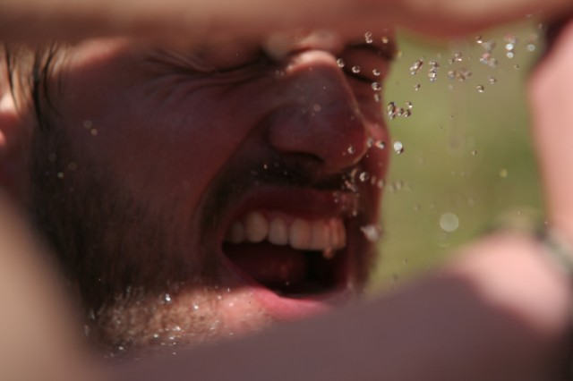

Tým
a) Kdo je Tvůj mužský vzor/hrdina a proč?
b) Na kolik procent se cítíš býti mužem?
c) Co jsi ochoten do akce dát?

Jupíčert
a) Jako kluk jsem zbožňoval hrdiny filmových komedií Buda Spencera a Terence Hilla s jejich úžasnými a legračními bitkami. Dnes jsou mými hrdiny spíš Sokrates a Marcus Aurelius, snad že se snažili žít v souladu se svou filozofií. Oba měli své chyby, jako každý z nás, ale kromě velkých myšlenek i jejich činy jsou hodny respektu a úcty.
b) Čím, dál tím víc na 100 %.
c) Čas, čas, čas... :-) A taky ochotu nést kůži na trh.
Cedrik
a) Gaius Julius Caesar... Soudím však dle dobových pramenů, bohužel jsem neměl možnost si s ním potřást pravicí. :-(
b) Začal jsem to počítat pomocí rovnice o dvou neznámých, ale matematika mi nikdy moc nešla. Myslím, že z větší části jsem muž, tedy jsem MUŽ! A jestli s tím někdo má problém tak si to rád vyříkám pěkně po mužsku.
c) Tuto akci chystám(e) už více než rok... Sice tak nějak po mužsku, žádný stres, ale stejně. :-) Dávám do ní hodně času a věřím, že to, co do ní dám, se mi i bohatě vrátí.
Jarda
a) Dětství jsem strávil spolu s hochy z Foglarovek. :) Mé současné názory a postoje však formovalo mnoho různých mužů (i žen!) a těžko se z nich vybírá, ale na prvním místě by mohl být Jára da Cimrman. ;) Teď vážně, rád zmíním posledního Dalajlámu, Tomáše Baťu, J. A. Komenského či Tomáše Hajzlera, jsou to lidé s rozhledem a pochopením, kteří mění dějiny a věřím, že k lepšímu. =)
b) Fyzicky průměr, psychicky nadprůměr. :)
c) Všechny své dovednosti, umění, nápady, čas. A taky kus šamana. ;)
Filip
a) Řekl bych , že se nechávám inspirovat lidmi, kteří znají sebe a své chování. Takže vzorem chci být sobě.
b) Asi na tolik, že mi něco plandá mezi nohama! :-D
c) Sebe a svůj čas. :-)
Dan
a) Mitch Buchannon z Pobřežní hlídky, protože zachraňoval životy.
b) Na 100 %, prostě jo!
c) Všecho, i svůj instinkt lovce.

{kind=link}
{kind=link}
{kind=link}
{kind=link}
{kind=link}